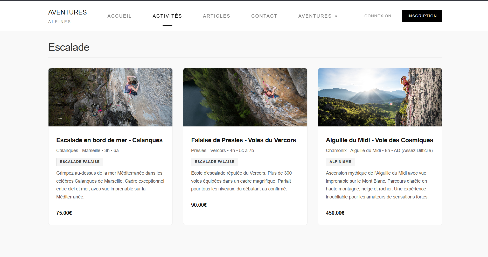
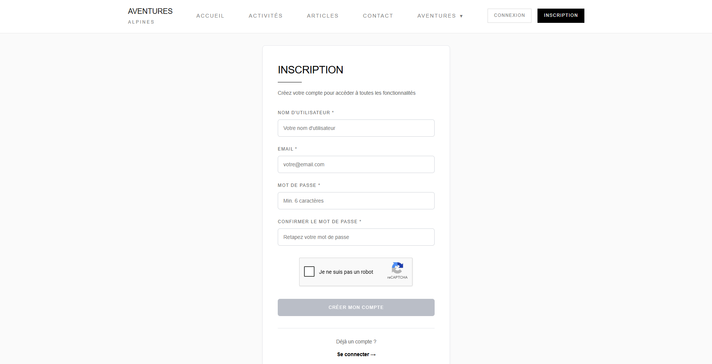
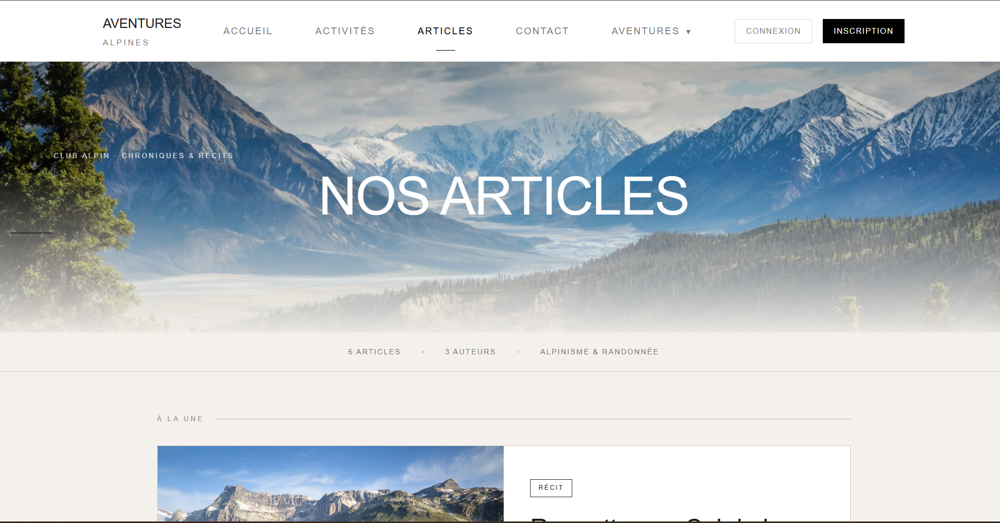

Explorer les activités
Le catalogue rassemble les activités de montagne. Ses filtres permettent au visiteur d’affiner sa recherche avant de consulter une sortie.
Une application pour préparer une sortie en montagne. Les visiteurs peuvent explorer des activités de randonnée, d’escalade et de ski, réserver une sortie et partager leurs expériences sous forme d’articles.

Projet de formation · 2ᵉ année de BTS SIO option SLAM
J’ai développé Aventures Alpines pendant ma deuxième année de BTS SIO option SLAM. Je voulais qu’un visiteur puisse partir d’une envie assez large, comme faire de l’escalade, puis trouver une sortie qui lui convient et la réserver depuis la même application.
Avec React, j’ai créé le catalogue et ses filtres, ainsi que les pages consacrées à la randonnée, à l’escalade et au ski. J’ai aussi développé l’espace membre pour que chaque utilisateur puisse retrouver ses réservations et publier des articles sur ses aventures en montagne.
Côté serveur, j’ai développé une API REST avec Node.js et Express pour relier l’interface à la base MySQL. Par exemple, lorsqu’un membre consulte ses réservations, l’interface interroge l’API, qui récupère les données associées à son compte et les renvoie à React pour les afficher.
Le catalogue rassemble les activités de montagne. Ses filtres permettent au visiteur d’affiner sa recherche avant de consulter une sortie.

La rubrique escalade réunit les sites de pratique et les offres de sorties. Un visiteur qui a déjà choisi sa discipline peut y consulter directement les possibilités qui s’offrent à lui.

Le formulaire d’inscription intègre une vérification reCAPTCHA. Une fois inscrit, le membre peut se connecter pour retrouver ses réservations et publier ses propres articles.

Après avoir choisi une activité, le membre peut réserver sa sortie. La réservation est associée à son compte pour qu’il puisse la retrouver lors de sa prochaine connexion.

La rubrique « Nos articles » rassemble les publications des membres. Les visiteurs peuvent y lire leurs récits, et les membres connectés peuvent à leur tour raconter une sortie.